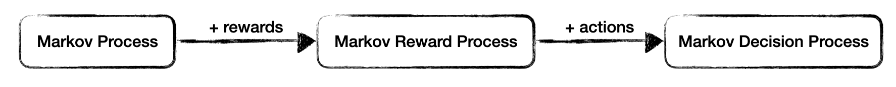
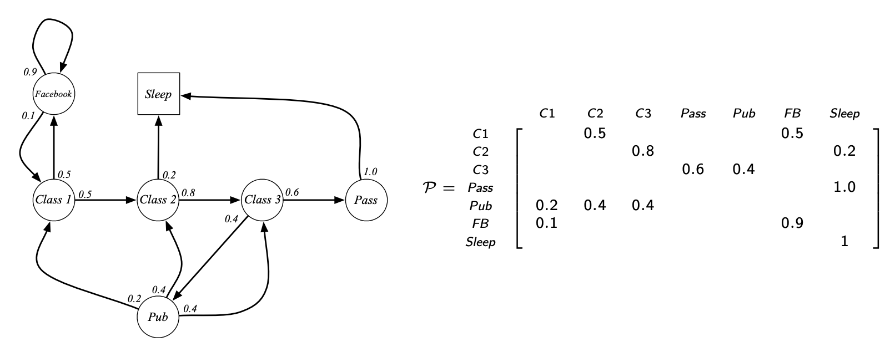
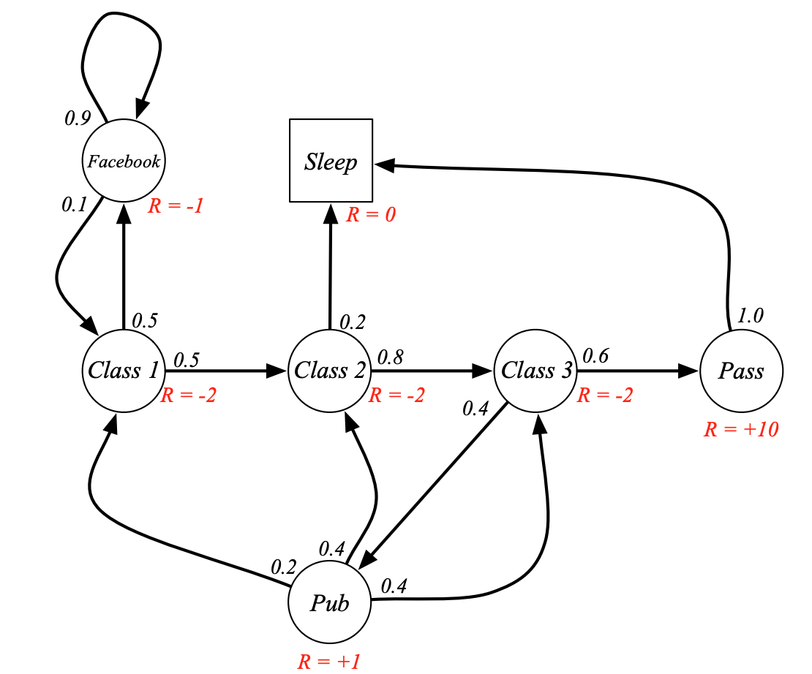
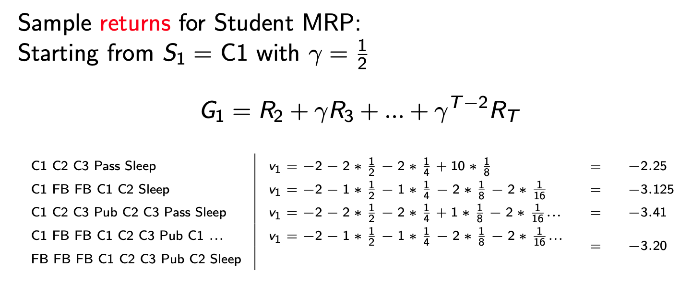
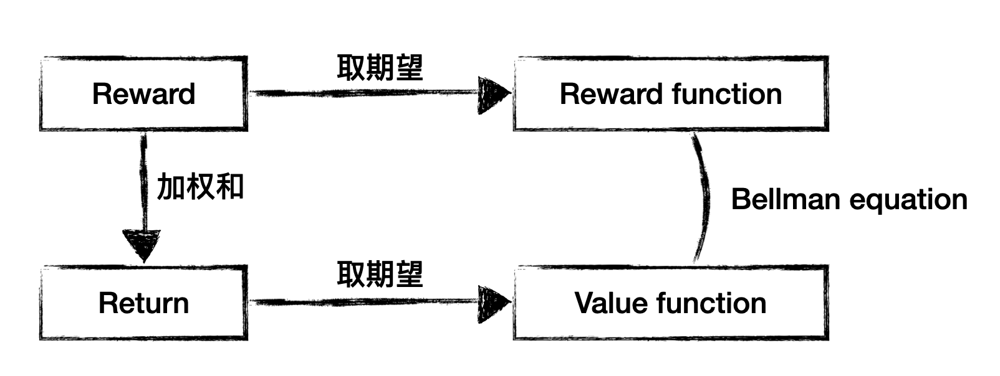
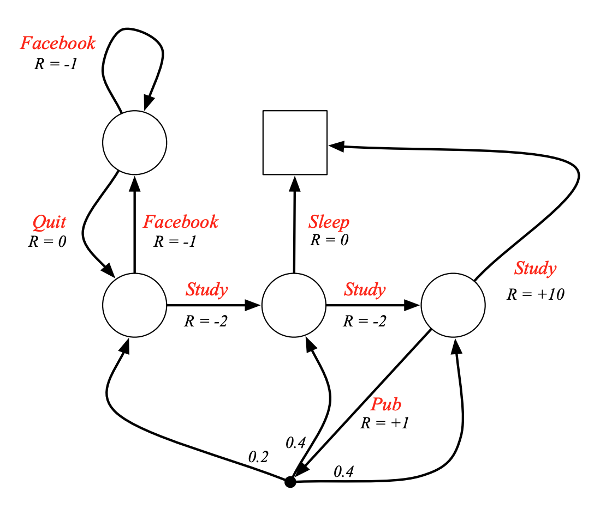
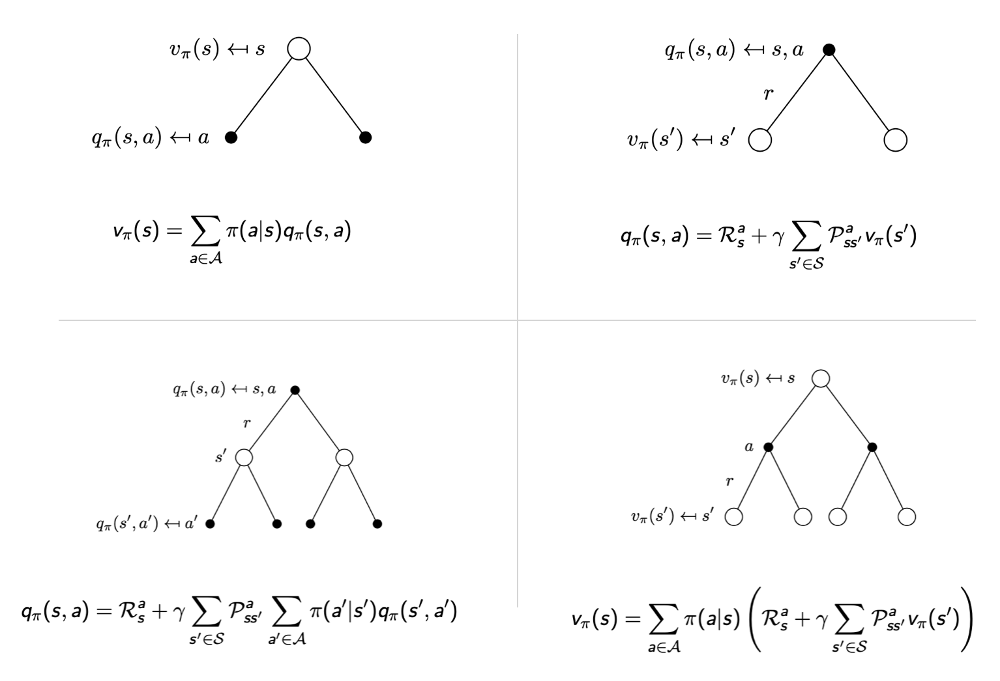
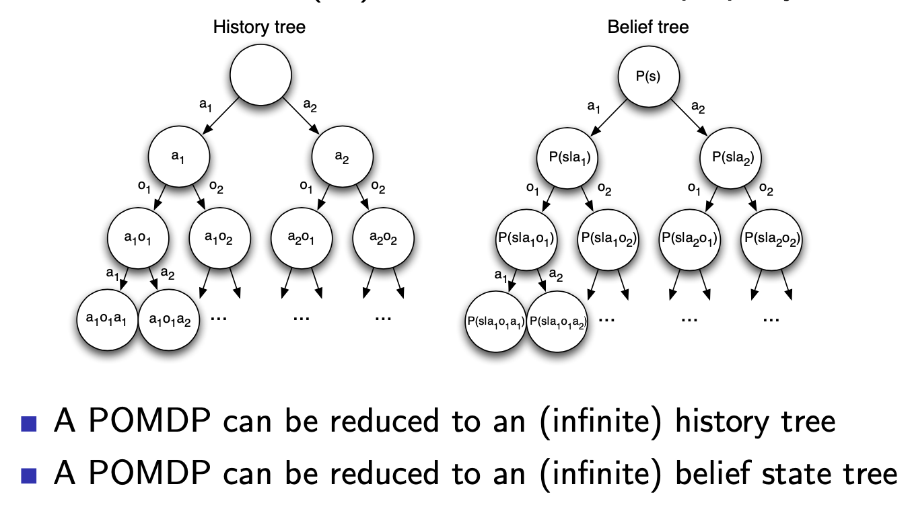

[强化学习]2·马尔可夫决策过程

1 马尔科夫过程
马尔可夫性质：给定当前状态，未来状态与过去状态（即智能体的历史轨迹）是条件独立的，即： \[ P(S_{t+1}\vert S_t)=P(S_{t+1}\vert S_1,\ldots,S_t) \]
强化学习主要研究的是具有马尔可夫性的问题。
状态转移矩阵：对于马尔可夫状态 \(s\) 和它的后继状态 \(s'\)，记： \[ \mathcal P_{ss'}=P(S_{t+1}=s'\vert S_t=s) \] 称矩阵 \(\mathcal P\) 为状态转移矩阵。
定义：马尔可夫过程 (Markov Process) 或马尔可夫链 (Markov Chain) 是一个元组 \(\langle \mathcal S,\mathcal P\rangle\)，其中：
- \(\mathcal S\) 是一个有限状态集
- \(\mathcal P\) 是状态转移矩阵
例子：“学生马尔可夫链”的状态转移图和状态转移矩阵：

我们可以从这个马尔可夫过程中采样，得到一些轨迹 (episodes)，例如：
- C1, C2, C3, Pass, Sleep
- C1, FB, FB, C1, C2, Sleep
- C1, C2, C3, Pub, C2, C3, Pass, Sleep
- C1, FB, FB, C1, C2, C3, Pub, C1, FB, FB, FB, C1, C2, C3, Pub, C2, Sleep
- ……
2 马尔可夫奖励过程
在马尔可夫过程中加入奖励，就得到了马尔可夫奖励过程 (Markov Reward Process, MRP).
2.1 定义
回顾：奖励 \(R_t\) 是一个随机变量，表示 \(t\) 时刻的奖励。为什么说它是一个随机变量呢，因为对于从同一个马尔可夫过程中采样出的不同轨迹，\(t\) 时刻的奖励是不同的；换句话说，对于某特定采样出的轨迹，其 \(t\) 时刻的奖励是随机变量 \(R_t\) 的某个特定取值。
定义：马尔可夫奖励过程是一个元组 \(\langle\mathcal S, \mathcal P, \mathcal R, \gamma\rangle\)，其中：
- \(\mathcal S\) 是一个有限状态集
- \(\mathcal P\) 是状态转移矩阵
- \(\mathcal R\) 是奖励函数 (reward function)，\(\mathcal R(s)=\mathbb E[R_{t+1}\vert S_t=s]\)
- \(\gamma\in[0,1]\) 是衰减系数 (discount factor)
例子：“学生 MRP”的状态转移图：

2.2 回报
定义回报 (return) \(G_t\) 是从时间戳 \(t\) 开始的总加权奖励： \[ G_t=R_{t+1}+\gamma R_{t+2}+\cdots=\sum_{k=0}^\infty\gamma^kR_{t+1+k} \] 由于 \(R_t\) 是随机变量，\(G_t\) 自然也是随机变量，其具体取值随采样出的轨迹的不同而不同。
为什么需要衰减系数？
- 数学上处理较为方便
- 避免在循环马尔可夫过程上出现无穷大的回报
- 我们的建模往往不太精准，对未来的把握不是很确定
- 对动物/人类的行为研究表明，我们更喜欢短期（立即的）奖励
- 如果你真的觉得衰减系数不好，那设置 \(\gamma=1\) 即可
2.3 价值
回报 \(G_t\) 是一个随机变量，对于不同的采样结果具有不同的值，为了衡量平均的未来总回报，定义价值 (value) 为 \(G_t\) 的期望： \[ v(s)=\mathbb E[G_t\vert S_t=s] \]
仍以“学生 MRP”为例：

【个人认为这一页 slide 上的 \(v_1\) 应该写作 \(g_1\)（随机变量 \(G_1\) 的各种可能取值），\(v_1\) 应该是这些 \(g_1\) 的平均，即 \(G_1\) 的期望】
对上述定义的小结：
- 奖励 \(R_t\) 是时间 \(t\) 的函数，是一个随机变量，表示 \(t\) 时刻获得的奖励
- 奖励函数 \(\mathcal R(s)\) 是状态 \(s\) 的函数，表示在状态 \(s\) 处获得奖励的条件期望：\(\mathcal R(s)=\mathbb E[R_{t+1}\vert S_t=s]\)
- 回报 \(G_t\) 是时间 \(t\) 的函数，是一个随机变量，表示从 \(t\) 时刻开始未来的（加权）总奖励
- 价值 \(v(s)\) 是状态 \(s\) 的函数，表示在状态 \(s\) 处未来的（加权）总奖励的条件期望：\(v(s)=\mathbb E[G_t\vert S_t=s]\)

2.4 贝尔曼方程
根据 \(v(s)\) 的定义式，有： \[ \begin{align} v(s)&=\mathbb E[G_t\vert S_t=s]\\ &=\mathbb E[R_{t+1}+\gamma R_{t+2}+\gamma^2R_{t+3}+\cdots\vert S_t=s]\\ &=\mathbb E[R_{t+1}+\gamma G_{t+1}\vert S_t=s]\\ \end{align} \] 这意味着 \(v(s)\) 由立即奖励 \(R_{t+1}\) 和衰减后的未来奖励 \(G_{t+1}\) 构成，我们继续推导： \[ \begin{align} v(s)&=\mathbb E[R_{t+1}+\gamma G_{t+1}\vert S_t=s]\\ &=\mathbb E[R_{t+1}\vert S_t=s]+\gamma\mathbb E[G_{t+1}\vert S_{t}=s]\\ &=\mathbb E[R_{t+1}\vert S_t=s]+\gamma\sum_{s'\in \mathcal S}P(S_{t+1}=s'\vert S_t=s)\mathbb E[G_{t+1}\vert S_{t+1}=s']\\ &=\mathcal R_s+\gamma\sum_{s'\in\mathcal S}\mathcal P_{ss'}v(s') \end{align} \] 倒数第二行利用了全期望公式，通过全概率公式容易推得。上式就是贝尔曼方程 (Bellman equation)，我们可以将其写作矩阵形式： \[ \mathbf v=\mathcal R+\gamma\mathcal P\mathbf v \] 也即： \[ \begin{bmatrix}v(s_1)\\\vdots\\v(s_n)\end{bmatrix}=\begin{bmatrix}\mathcal R(s_1)\\\vdots\\\mathcal R(s_n)\end{bmatrix}+\gamma\begin{bmatrix}\mathcal P_{s_1s_1}&\cdots&\mathcal P_{s_1s_n}\\\vdots&\ddots&\vdots\\\mathcal P_{s_ns_1}&\cdots&\mathcal P_{s_ns_n}\end{bmatrix}\begin{bmatrix}v(s_1)\\\vdots\\v(s_n)\end{bmatrix} \] 可以看出，贝尔曼方程是一个线性方程，因而可以直接求解： \[ v=(I-\gamma\mathcal P)^{-1}\mathcal R \] 然而，矩阵求逆的复杂度是 \(O(n^3)\)，其中 \(n\) 是状态数量，因此这种方法只适用于小规模 MRP。在后续课程中我们会学到一些求解大规模 MRP 的迭代算法，包括：
- 动态规划 (Dynamic Programming)
- 蒙特卡洛估计 (Monte-Carlo evaluation)
- 时序差分学习 (Temporal-Difference learning)
3 马尔科夫决策过程
在 MRP 中加入动作 (action)，就得到了马尔科夫决策过程 (Markov Decision Process, MDP).
3.1 定义
定义：马尔科夫决策过程是一个元组 \(\langle\mathcal S, \mathcal A, \mathcal P, \mathcal R, \gamma\rangle\)，其中：
- \(\mathcal S\) 是一个有限状态集
- \(\mathcal A\) 是一个有限动作集
- \(\mathcal P\) 是状态转移矩阵，\(\mathcal P^a_{ss'}=P(S_{t+1}=s'\vert S_t=s,A_t=a)\)
- \(\mathcal R\) 是奖励函数，\(\mathcal R_s^a=\mathbb E[R_{t+1}\vert S_t=s,A_t=a]\)
- \(\gamma\in[0,1]\) 是衰减系数 (discount factor)
注意 \(\mathcal P,\mathcal R\) 的定义都加上了动作 \(a\) 作为条件。
依旧用我们熟悉的例子，“学生 MDP”的状态转移图如下所示：

3.2 策略
定义：策略 (policy) \(\pi\) 表示智能体在状态 \(s\) 的条件下做出各动作的概率分布： \[ \pi(a\vert s)=P(A_t=a\vert S_t=s) \] 一个策略定义了智能体的行为，它仅依赖于当前状态而与历史无关。虽然上述定义式中写了下标 \(t\)，但是仅是为了书写方便，策略是静态的，和时间无关。
MDP 与 MP 和 MRP 的联系：给出一个 MDP \(\mathcal M=\langle\mathcal S,\mathcal A,\mathcal P,\mathcal R,\gamma\rangle\) 和一个策略 \(\pi\)，则：
- \(\langle\mathcal S,\mathcal P^\pi\rangle\) 是一个 MP
- \(\langle \mathcal S,\mathcal P^\pi,\mathcal R^\pi,\gamma\rangle\) 是一个 MRP
其中： \[ \begin{align} &\mathcal P^\pi_{ss'}=\sum_{a\in\mathcal A}\pi(a\vert s)\mathcal P^a_{ss'}\\ &\mathcal R^\pi_s=\sum_{a\in\mathcal A}\pi(a\vert s)\mathcal R^a_s \end{align} \]
这两个式子是条件概率（以 \(S_t=s\) 为条件）下的全概率公式——在状态 \(s\) 下，依照策略 \(\pi\)，有 \(\pi(a\vert s)\) 的概率做出动作 \(a\)，做出动作 \(a\) 后有 \(\mathcal P^a_{ss'}\) 的概率转移到状态 \(s'\)，能获得期望奖励为 \(\mathcal R_s^a\).
3.3 状态/动作-价值
仿照 MRP 中价值函数的定义，加入策略 \(\pi\) 的因素，定义状态-价值 (state-value) 为： \[ v_\pi(s)=\mathbb E_\pi[G_{t}\vert S_t=s] \] 换句话说，当我们在对 \(G_t\) 采样时，需要依照策略 \(\pi\) 来采样。
假若在策略 \(\pi\) 下，已知第一步做出了动作 \(a\)，那么在此条件下，定义动作-价值 (action-value) 为： \[ q_\pi(s,a)=\mathbb E_\pi[G_t\vert S_t=s,A_t=a] \] 二者的不同之处在于当前时刻做出的动作 \(A_t\) 是按照策略 \(\pi\) 采样的还是给定的。
根据条件概率定义和全概率公式，容易知道二者有关系： \[ \begin{align} &\color{purple}{v_\pi(s)=\sum_{a\in\mathcal A}\pi(a\vert s)q_\pi(s,a)}\\ &q_\pi(s,a)=\pi(a\vert s)v_\pi(s) \end{align} \]
3.4 贝尔曼期望方程
仿照 MRP 中关于贝尔曼方程的推导，在 MDP 中进行类似推导： \[ \begin{align} v_\pi(s)&=\mathbb E_\pi[G_t\vert S_t=s]\\ &=\mathbb E_\pi[R_{t+1}+\gamma G_{t+1}\vert S_t=s]\\ &=\mathbb E_\pi[R_{t+1}\vert S_t=s]+\gamma\mathbb E_\pi[G_{t+1}\vert S_t=s]\\ &=\mathcal R_s^\pi+\gamma\sum_{s'\in\mathcal S}\mathcal P^\pi_{ss'}v_\pi(s')\\ &=\color{purple}{\sum_{a\in\mathcal A}\pi(a\vert s)\left[\mathcal R_s^a+\gamma\sum_{s'\in\mathcal S}\mathcal P^a_{ss'}v_\pi(s')\right]} \end{align} \] 对 \(q_\pi(s,a)\) 也可以进行类似的推导： \[ \begin{align} q_\pi(s,a)&=\mathbb E_\pi[G_t\vert S_t=s,A_t=a]\\ &=\mathbb E_\pi[R_{t+1}+\gamma G_{t+1}\vert S_t=s,A_t=a]\\ &=\mathbb E_\pi[R_{t+1}\vert S_t=s,A_t=a]+\gamma\mathbb E_\pi[G_{t+1}\vert S_t=s,A_t=a]\\ &=\mathcal R_s^a+\gamma\sum_{s'\in\mathcal S}\mathbb E_\pi[G_{t+1}\vert S_{t+1}=s']P(S_t=s+1\vert S_t=s,A_t=a))\\ &=\color{purple}{\mathcal R_s^a+\gamma\sum_{s'\in\mathcal S}\mathcal P^a_{ss'}}v_\pi(s')\\ &=\color{purple}{\mathcal R_s^a+\gamma\sum_{s'\in\mathcal S}\mathcal P^a_{ss'}}\sum_{a'\in\mathcal A}\pi(a'\vert s')q_\pi(s',a')\\ \end{align} \] 紫色的四个式子分别建立起了 \(v_\pi(s)\) 与 \(v_\pi(s')\)、\(v_\pi(s)\) 与 \(q_\pi(s,a)\)、\(q_\pi(s,a)\) 与 \(q_\pi(s',a')\)、\(q_\pi(s,a)\) 与 \(v_\pi(s')\) 的关系，对应下面的四张图：

这些方程称作贝尔曼期望方程 (Bellman Expectation Equation).
3.5 最优价值函数
我们做强化学习的最终目的是找到最佳的策略，因此定义最优状态-价值函数和最优动作-价值函数为：
\[ \begin{align} &v_\ast(s)=\max_\pi v_\pi(s)\\ &q_\ast(s,a)=\max_\pi q_\pi(s,a) \end{align} \] 定理：对于任何 MDP，存在最优策略 \(\pi_\ast\)（不一定唯一），并且 \(v_{\pi_\ast}(s)=v_\ast(s)\)，\(q_{\pi_\ast}(s,a)=q_\ast(s,a)\).
反之，沿着最大化 \(q(s,a)\) 的方向做决策，我们就能得到最优策略，即： \[ \pi_\ast(a\vert s)=\begin{cases}1&\text{if }a=\arg\max\limits_{a\in\mathcal A} q_\ast(s,a)\\0&\text{otherwise}\end{cases} \] 这意味着：对任何 MDP，我们的最优策略都是确定性的（而不是随机的）；只要我们求得 \(q_\ast(s,a)\)，那么就能立刻知道最优策略是什么。
3.6 贝尔曼最优方程
由于最优策略也是策略的一种，所以四个贝尔曼方程自然在最优情况下也成立，略作化简可得： \[ \begin{align} &v_\ast(s)=\max_aq_\ast(s,a)\\ &q_\ast(s,a)=\mathcal R^a_s+\gamma\sum_{s'\in\mathcal S}\mathcal P^a_{ss'}v_\ast(s')\\ &v_\ast(s)=\max_a\left(\mathcal R^a_s+\gamma\sum_{s'\in\mathcal S}\mathcal P^a_{ss'}v_\ast(s')\right)\\ &q_\ast(s,a)=\mathcal R_s^a+\gamma\sum_{s'\in\mathcal S}\mathcal P^a_{ss'}\max_{a'}q_\ast(s',a') \end{align} \] 称它们为贝尔曼最优方程 (Bellman Optimality Equation).
与贝尔曼方程和贝尔曼期望方程不同，由于 \(\max\) 操作的存在，贝尔曼最优方程是非线性的，一般没有闭式解，但存在许多迭代解法，例如：
- 价值迭代 (Value Iteration)
- 策略迭代 (Policy Iteration)
- Q-learning
- Sarsa
这些算法我们将在后续课程中学到。
4 MDPs 扩展（了解）
我们之前考虑的 MDPs 都是有限的、离散的、完全可观测的，如果没有这些限制，我们可以对 MDPs 进行扩展。
4.1 无限 MDPs
无限也分好几种：
- 可数无限的状态/动作空间：这种扩展是比较直接的
- 连续的状态/动作空间：Closed form for linear quadratic model
- 时间上连续：需要偏微分方程，Hamilton-Jacobi-Bellman equation 是贝尔曼方程在 \(t\to0\) 的极限情形
4.2 部分可观测 MDPs
POMDP 是一个具有隐状态的 MDP，是具有动作的隐马尔可夫模型。
定义：POMDP 是一个元组 \(\langle\mathcal S,\mathcal A,\mathcal O,\mathcal P,\mathcal R,\mathcal Z,\gamma\rangle\)，其中 \(\mathcal S,\mathcal A,\mathcal P,\mathcal R,\gamma\) 的定义不变，新增加了：
- \(\mathcal O\)：观测 (observations) 的有限集合
- \(\mathcal Z\)：观测函数 (observation function)，\(\mathcal Z_{s'o}^a=P(O_{t+1}=o\vert S_{t+1}=s',A_t=a)\)
回顾：历史 (history) 是动作、观察和奖励的序列： \[ H_t=A_0,O_1,R_1,\ldots,A_{t-1},O_t,R_t \] 定义置信状态 (belief state) \(b(n)\) 是在给定历史的条件下，状态的概率分布： \[ b(h)=(P(S_t=s^1\vert H_t=h),\ldots,P(S_t=s^n\vert H_t=h)) \] 类似于 MDP 中我们画的两种树，POMDP 也可以规约成两种树：

4.3 各态历经马尔可夫过程
各态历经马尔可夫过程 (Ergodic Markov Process) 具有以下特点：
- 常返 (recurrent)：每一个状态会被无限次访问
- 非周期 (aperiodic)：每一个状态被访问的时间不具有周期性
定理：一个各态历经 MDP 具有极限的平稳分布 \(d^\pi(s)\)，满足： \[ d^\pi(s)=\sum_{s'\in\mathcal S}d^\pi(s')\mathcal P_{ss'} \] 对于任意策略 \(\pi\)，一个各态历经 MDP 有一个与起始状态无关的每时刻平均奖励 \(\rho^\pi\)： \[ \rho^\pi=\lim_{T\to\infty}\frac{1}{T}\mathbb E\left[\sum_{t=1}^TR_t\right] \] 利用 \(\rho^\pi\) 的定义，我们可以给出 undiscounted, ergodic MDP 的描述。设 \(\tilde v_\pi(s)\) 表示由于从状态 \(s\) 起始而带来的额外奖励，则 \[ \tilde v_\pi(s)=\mathbb E_\pi\left[\sum_{k=1}^\infty(R_{t+k}-\rho^\pi)\vert S_t=s\right] \] 我们可以相应地推导平均奖励贝尔曼方程 (average reward Bellman equation).